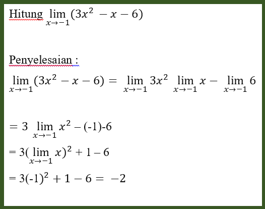
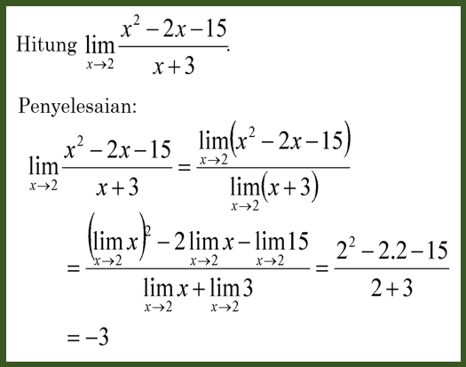
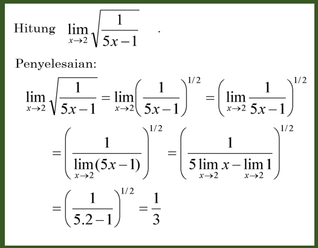

Limit Fungsi merupakan konsep yang lebih spesifik dalam matematika, di mana kita mengamati perilaku suatu fungsi saat variabel bebasnya mendekati suatu nilai tertentu.
Contoh 1 :
Penjelasan :
Contoh di atas menggunakan cara penyelesaian dengan substitusi langsung.
Langkah-langkah Penyelesaian Substitusi Langsung:
- Identifikasi fungsi yang diberikan dan titik yang hendak dihitung limitnya.
- Substitusikan nilai titik tersebut ke dalam fungsi.
- Jika hasil substitusi menghasilkan nilai yang terdefinisi (bukan bentuk tak tentu seperti 0/0), maka nilai limitnya adalah hasil substitusi tersebut.
- Jika hasil substitusi menghasilkan bentuk tak tentu, maka Anda perlu menggunakan teknik lain seperti faktorisasi.
Contoh 2 :
Penjelasan :
Menggunakan metode pemfaktoran untuk menyelesaikan limit fungsi.
Langkah-langkah Penyelesaian dengan Pemfaktoran:
- Identifikasi bentuk tak tentu yang muncul setelah substitusi nilai ke dalam fungsi
- Faktorkan pembilang dan penyebut fungsi hingga memungkinkan untuk menyederhanakan bentuk tak tentu tersebut.
- Setelah faktorisasi, coba substitusikan nilai titik ke dalam fungsi yang sudah disederhanakan.
- Jika tidak muncul bentuk tak tentu lagi, maka nilai limitnya adalah hasil dari substitusi tersebut.
Contoh 3 :
Penjelasan :
Menggunakan metode perubahan bentuk akar ke dalam bentuk pangkat untuk menyelesaikan limit fungsi.
Langkah-langkah Penyelesaian dengan Mengubah Akar Menjadi Pangkat:
- Identifikasi fungsi yang mengandung akar yang perlu disederhanakan.
- Ubah bentuk akar ke dalam bentuk pangkat. Dengan menambahkan pangkat 1/2 pada sisi luar.
- Setelah diubah, coba lakukan substitusi nilai titik ke dalam fungsi yang sudah diubah.
- Jika hasil substitusi menghasilkan nilai yang terdefinisi, maka nilai limitnya adalah hasil dari substitusi tersebut.